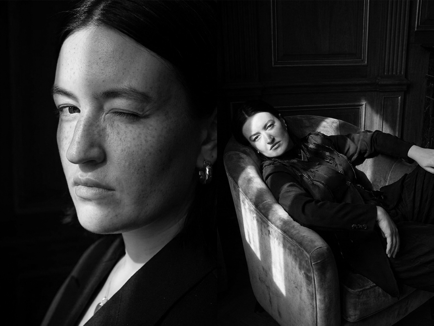

Film director
Katarina
Holzmann Ekholm
Katarina Holzmann Ekholm is a film director from Gothenburg, Sweden. She graduated from the Gerrit Rietveld Academie in Amsterdam in 2024 with the short film Hökarängen City, which premiered at Eye Filmmuseum in Amsterdam and won Best Director and Best Casting at Sweden Short Film Festival 2025. Hökarängen City also competed in the national competition at the Uppsala International Short Film Festival. Her most recent works are the shorts Cheese and Dough, filmed in Atlanta, GA, in collaboration with screenwriter Charles Rainey, premiering in 2026.
About
Katarina Holzmann Ekholm
Katarina Holzmann Ekholm is a film director from Gothenburg, Sweden. She graduated from the Gerrit Rietveld Academie in Amsterdam in 2024 with the short film Hökarängen City, which premiered at Eye Filmmuseum in Amsterdam and won Best Director and Best Casting at Sweden Short Film Festival 2025. Hökarängen City also competed in the national competition at the Uppsala International Short Film Festival.
Her most recent works are the shorts Cheese and Dough, filmed in Atlanta, GA, in collaboration with screenwriter Charles Rainey, premiering in 2026.
Works
Selected films as director
- Dough upcoming 2026
- Cheese upcoming 2026
- Hökarängen City 2025
- Mare Lacrimarum 2023
- Stacy on Clouds
- Snowflake

Curriculum Vitae
Katarina Holzmann Ekholm
Education
Filmography — Director
Filmography — Director's assistant & other
Selected works